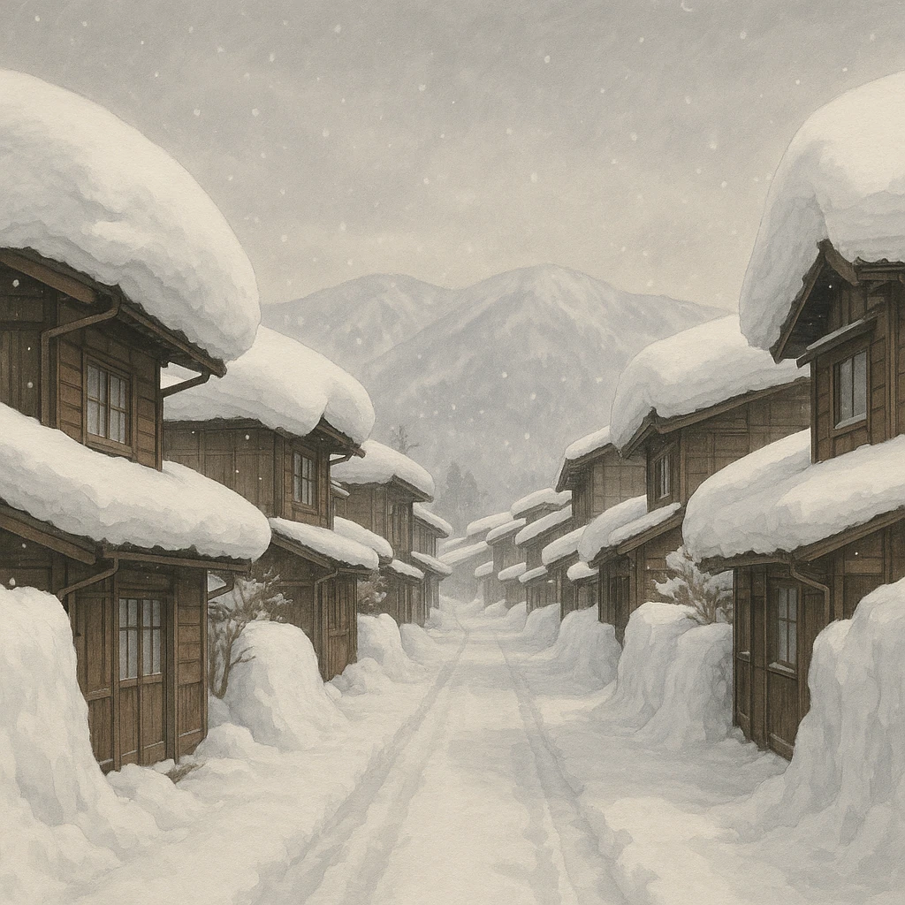

Ⅴ-3
季節風のしくみ
風は山をこえると
乾く
大陸
日本海
山地
太平洋
乾燥した風
湿った風
乾燥した風
❄
❄
❄
❄
日本海側に雪
太平洋側は晴れて乾燥
①
大陸からの
乾いた北西風
が、あたたかい日本海（対馬海流）の上で
水分
をもらう。
②
山地にぶつかって上昇し、
日本海側に大量の雪
をふらせる。
③
山をこえた風は
乾いた風
になり、太平洋側は
冬に晴れて乾燥
する。

第11章 日本の地形・自然の特色
SEED EDUCATION